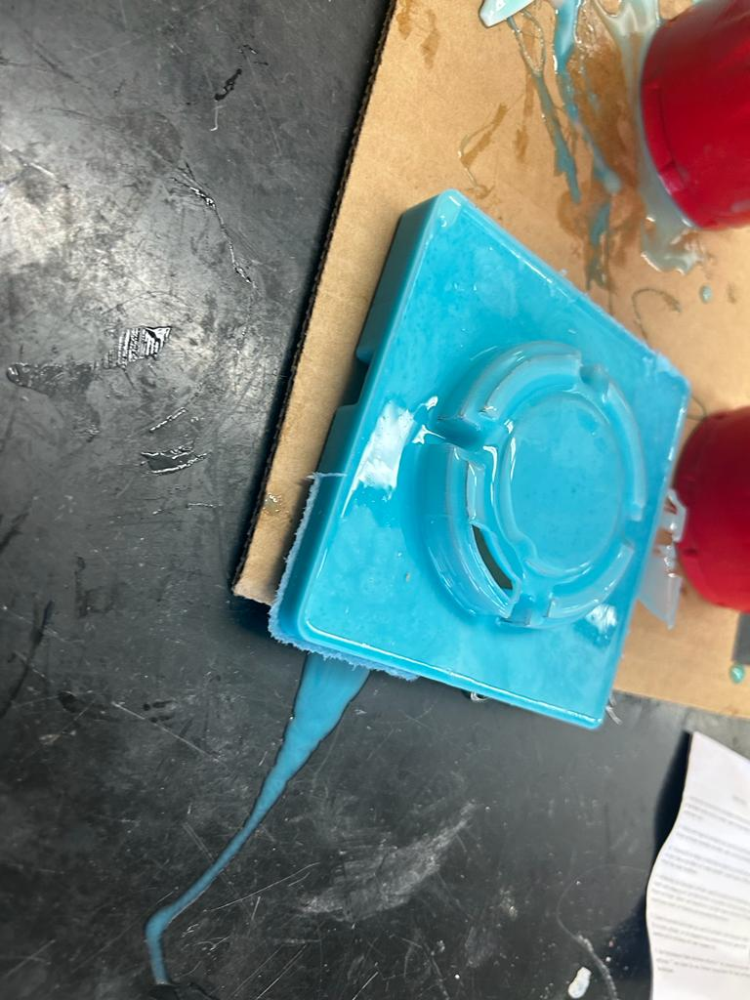

Designing The Mold
Overall Understanding
Teddy Warner taught us about different molding processes.
- for hard parts, mold from a milled or 3d-printed design then use the casted mold for the final part
- for soft parts, mill or 3d-print the mold
Ms. Morrow's Tutorial (~13:40) explains that this is because a hard substance won't pull out of another hard substance well.
Mr. Budzichowski said our machines have 5/8" depth of cut.
Overall Planning
Here's my plan for this week.
- watch the lecture
- look at past documentation
- make the design
- mill the mold
- carry out the mold
Looking At Past Projects
Making The Design
I decided I'll mold the lid of the trigger mechanism for my final project. Due to the shape of the design and overhangs, it will need to be a three part mold. I used Fusion 360 to make the design. The first step was to make extrusions larger than the part then use the Combine tool with the Cut setting. After making different pieces in such a way that they'll fit onto one another, I made another box and used the Combine tool to simulate the mold to make sure it would work, and after some adjustments, I made a design I was happy with. I then made molds for the molds in the same way, adding extruded holes in the top piece for a place to pour and a place for trapped air to be released. I also added 1 deg drafts to most of the pieces (not in the final mold but in the rubber mold) that way I could easily remove the pieces, but I didn't stress about making them for all pieces since having a soft component of every cast will make it easier to separate pieces.
I also decided I wouldn't need any tolerance since the pieces casted from the milled wax would be soft.


Milling The Mold
Exporting The Files
I followed Dr. Taylor's Workflow (included in weekly files) for using the Manufacturing workspace in Fusion 360. I used Pocket cuts as a roughing pass, set the feed rate to 750 mm/min and set the maximum roughing stepdown to 0.75mm (for the top and bottom molds). I used the 1/8" ball end mill wax bit for both the roughing and finishing pass, although I later learned that a flat end mill is more appropriate for the roughing pass as it will drastically reduce the job time, and I will be sure to use this for future milling endeavors. I also did a Parallel toolpath as a finishing pass for the ramps on the middle mold. I also used a top offset of 0.75 mm for the middle mold to account for uneveness in the top face of the wax. If any of this is unclear, please see the Setups and timeline in the Fusion 360 files for Week 12 on the Reflection Page.
Preparing The Wax
I used the video on Ms. Morrow's Documentation as a basis for fusing wax blocks together, as I needed more width than was available on one wax block. After a couple of failed attempts, I learned that heating one side really hot until its very melty, while having the other slide a little shiny, works very well. I used the highest setting on the heat gun for everything. After they were somewhat stuck together, I used the heat gun to melt all of the creases between the two blocks. I learned that holding the heat gun at a 45 degree angle and then flipping it to the other side help make the wax one cohesive piece once it rehardened. I right-clicked on the setup and clicked Machining Time as well as Simulate to make sure the result was what I wanted.
After I had made the first mold (documented below), Mr. Budzichowski helped me use the Bandsaw to cut away the excess mold from my first piece I milled. I used this wax, as well as other wax, to make two more wide enough pieces for the top and bottom molds.
I also copied the tool from the Othermill library and modified the values as follows to fit with the longer bit the lab ordered.
Milling
I used the Bantam Milling Machine which followed the same procedure as my other times milling. It was a very smooth process.
Middle Mold
This piece worked first try. I slightly underestimated the y-offset (even though I used calipers), but it didn't affect the final cast whatsoever.

Top Mold
This piece was also very smooth. I used a large block of wax that the lab melted down from scaps and used the bandsaw to remove excess, reusable wax. Because the shape of the top face of the large block was slightly concave, I had to remove my nitto tape and put it on the other side (it wouldn't contact with the bed of the milling machine).
The only problem is that the cut was very thin on the bottom since the toolpath was so close to the bottom of the wax. I learned that I not only need to check that the toolpath doesn't give any errors, but also give several millimeters of extra room at the bottom of the cut.


Additionally, I gathered much of the sawdust (or waxdust) by hand and put it in a ziploc bag to be melted down and reused by other students.
Bottom Mold
This piece also worked on the first try. The piece of wax I used was fiver other smaller pieces heat-welded together, so I was nervous about it sticking together. In the end, it did, but the only trouble spot was an uneven top surface. One wax piece was higher than the rest and the bit, for the first layer, cut through significantly more wax when cutting through that block and made an unpleasant sound. I watched it through the first layer and it didn't melt or cause other issues, and from that point on, the rest of the process was smooth.

Casting
I refered to the datasheet for Mold Star 16 Platinum Silicone Rubber and the datasheet for Task 8 Heat Resistant Polyurethane Resin before opening the containers.
Soft
Middle
When I was using the Bandsaw to cut away excess wax, the mold split apart along the two pieces of was I had fused together. I used a double-folded rubber band to hold it together.
I mixed 20oz Part A and 20oz Part B of Platinum Silicone Rubber (Ryan Kim and I were casting together - it was more than necessary for my part).
We poured the parts into separate plastic cups then slowly poured them together and mixed for ~45sec. I then poured it into my mold and used a popsickle stick to remove excess material from the top (I was especially worried about this since this rubber piece will be the middle part of the three-part mold). I then gently but firmly slammed the cast into the table ~10 times to remove air bubbles. One time the mold slipped apart, but I quickly put it back together.

When I removed the mold, it worked very well! For the first protruding bit I needed to use an exacto knife to remove it without ripping, but I was able to carefully remove the rest of it with my fingers. The only problem was that, around the areas where the two wax pieces were held together, there were very thin pieces of rubber that couldn't be easily ripped off. I carefully removed the parts I could by ripping, but I used scissors for the other parts.


Also the bottom side of the rubber allowed me to see how many bubbles were still in the material (my other silicone casts below looked similar on the bottom).

This piece really allowed me to see how much of an impact the finishing pass made.
Top
I followed the same process as the middle soft cast, and it was relatively smooth. The first time I had slightly too little material so I let the cast set for 30min then removed it.

I then redid it and mixed excess material (I would measure using water first but since the bottom layer of the wax was very this and partially breaking the water would have simply leaked out). I had some leakage on the bottom of the cast, but it was still successful and I used a razor blade to cut off the excess as well as I could.


Also when I casted the bottom piece (see below) I had accidentally poured way too much so I poured the rest back into the top mold since I didn't want to waste the mixed material, but I again had just too little so I ended up scraping this other mold.


It leaked a lot and when removing the cast the mold broke (I think I was too generous when using the bandsaw to cut off excess material, sacrificing structural integrity; I also had to eyeball the position of the middle piece with the thin connection, which had broken; the middle piece also had pieces chip off of the bottom, slightly thicker square).

Bottom
I followed the same process as the previous two soft casts. This one worked first try, although there was some leaking, so I tried my best to take up the edge, and this was somewhat successful for the vertical edges but relatively ineffective for the bottom of the mold (the part touching the carboard on the table).


Hard
I aligned the three rubber molds together to make the final hard mold. I was very satisfied with the first of the bottom and middle pieces, although I wish it was tighter.
I tried filling it up with water to measure the exact volume, but it spilled out of a thin slice that had ruptured in the bottom piece.

I simply filled it up with the mixed hard material (I poured slightly too much, but I aimed to overestimate which worked well). I then realized it started leaking (even though I had put tape in that spot) so I pushed down on the rubber to try to stop it and also poured more to make sure the mold was full. I then waited until the casting material was more viscous and moved it away from the spilled material. I noticed that the cast got fairly hot, and at one point, it quickly changed to a whiter color. The cast worked faily well, especially for my first time casting plastic being a 3-part mold out of other casted silicone pieces. I used wire cutters and a chisel to remove excess material that had gotten in cracks and noticed that it's very hard to get a 3-part mold to be water-tight, so I'm considering 3D-printing this part for my final project, instead. Also, the small middle mold piece had been coated in a thin layer of plastic, but I couldn't remove it by hand, so I used a wire cutter to cut away at the plastic, and with Mr. Dubick's help, I removed the mold, but unfortunately it had broken.
Here's the final result!


Result & Design Shift
Since this mold didn't turn out wonderfully and has many chipped pieces, as well as considering the complexity of making an air-tight 3-part silicone mold, I've decided to 3D print the lid instead.
3D Printing
I set Supports to Everywhere and Infill to 20% in Prusa slicer for both the lid and the container. To export only the STL of those components, I clicked the eye icon on the other components to hide them then exported the entire model, and this wokred. Both of the prints were very smooth; here are images of the results.


Removing the supports was surprisingly easy. The pieces fit together perfectly! It tightens enough where it is difficult, but still possible, to take apart!